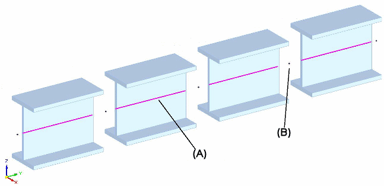

Define a node
-
Within the Frame environment, choose the Simulation tab→Mesh group→Node command
 .
. -
Do one of the following to locate the new node on a beam curve:
-
Random location—Click at any location along the curve.
-
Midpoint—Click the midpoint keypoint.
-
Offset from either end—Click an endpoint and type an offset value in the box.
-
-
Right-click to place the node.
The command stays active and you can continue to place additional nodes.
-
Press Escape to end the command.
(A) represents a beam curve.
(B) represents a beam node.

In a thermal study of a structural frames model, you cannot define thermal loads if the model contains rigid links. Rigid links are created when the frame path does not pass through the centroid of the cross section.
How do I
Analyze a structural frame modelDefine rigid links manually
Define a release
Display a beam cross section
Tutorial: Simulate stresses on a bridge
Tutorial: Create and simulate a roof truss framework
Learn more
Rigid link connectorsQuick links
Beam reaction component plotsBeam stress component plots
Beam diagrams